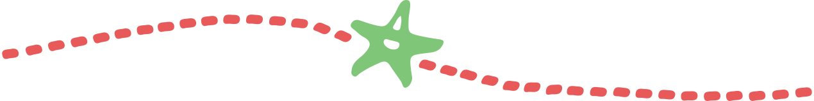
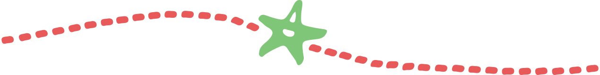

9.jpeg)


 1.jpeg)


The Brussels Region proposed a project for the Pierre Marchant Bridge in late 2022. A public survey ran in early 2023 and residents were able to comment on the new plans. These show a bridge no longer used by cars, with an asphalt bike lane in the center and a wooden deck for pedestrians along both sides. They also mention benches, picnic tables and temporary elements, so the proposed plans seem to be in line with our vision! We created a petition to show our support. This petition was signed by x people. Surlepont is a supporter of this project and responded in writing and orally to the February 16, 2023 consultation committee.


Beliris will reconstruct all public spaces in the new Biestebroek neighborhood. You can see two visualizations from a preliminary study by Beliris dated December 2021. Grondelsstraat will be a green public space, accessible only to pedestrians and cyclists, from the Pierre Marchant bridge to the railroad bridge. Grondels Square just on the other side of the railroad bridge will also become completely car-free.
What does the future of the Pierre Marchant Bridge look like? On April 13, 2022, Filter Café Filtré Atelier, together with DX1 and BRUZZ organized an urban debate on the bridge. Revisit the debate here.

Imagination Pierre Marchant © Filter Café Filtré Atelier
Download Filter Café Filtré Atelier's newspaper, which appeared following the city's debate on the bridge on April 13, 2022, here.
 

.svg)